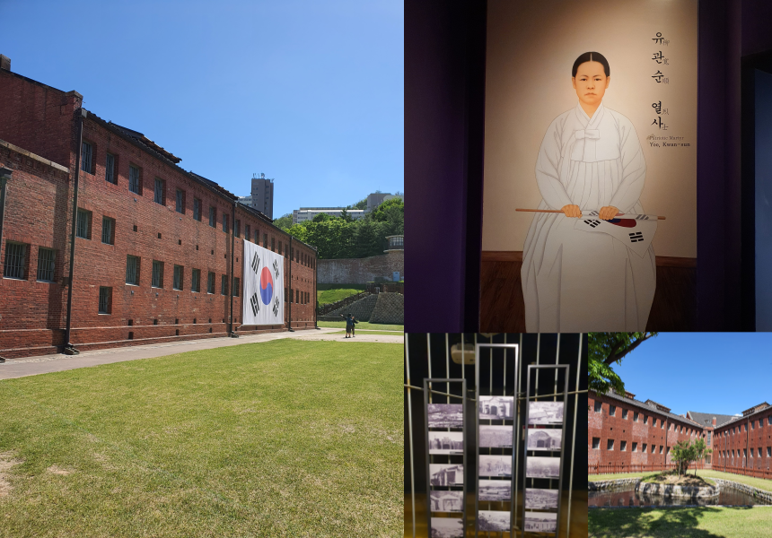

우리가 미처 알지 못 했던, 서대문 형무소의 사실들
약 500여 명을 수용할 수 있는 560여 평의 목조건물을 짓고 ‘경성 감옥’이라 불렀다. 종로의 감옥에서 500여 명을 데려와 수용하고 광복을 맞이하는 1945년까지 독립운동가들을 가두고 고문과 박해를 하고 심지어 목숨을 빼앗은 곳이다. 애국인사들이 늘어나자 1912년 일제는 마포구 공덕동에 감옥을 또 지어 경성 감옥이라 하고, 원래의 경성 감옥은 서대문 감옥이라 불렀다. 1923년 서대문 감옥은 서대문형무소로 바뀌었고 1944년에는 2,890명이 수용되었다. 18세 미만의 소녀들과 10년 이상을 선고받은 자, 그리고 무기수까지 수용하였으며, 김구 선생·강우규·유관순 열사 등이 이곳에 수용되었었다. 유관순 열사는 이곳에서 목숨을 다하였다.
1946년 광복 직후에는 경성형무소·서울형무소로 바뀌고, 반민족행위자와 친일 세력들이 수용되었다. 1961년에는 서울교도소로, 1967년에는 서울구치소로 바뀌었고, 4·19혁명과 5·16 군사쿠데타와 같은 정치적 변동으로 인해 많은 시국사범이 수용되었다. 1988년에 사적지로 지정되었다.
[출처 : 문화재청 국가문화 유산포탈]